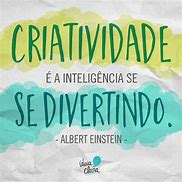

Soft Skills
As soft skills são habilidades sociais e não-técnicas que facilitam a interação entre as pessoas,
descomplicando, assim, a resolução de problemas que envolvem o trabalho e a execução de tarefas.São
competências intangíveis que estão diretamente ligadas ao comportamento.
As principais soft skills têm como objetivo favorecer o crescimento da produtividade e, também, o
desenvolvimento pessoal dos colaboradores através da coletividade e trabalho em equipe.

Liderança
Essa competência está mais relacionada à postura de liderança que direciona o caminho e transmite
segurança do que, necessariamente, com um cargo de liderança. Ou seja, este exemplo de soft skills se
associa com a capacidade de causas impactos positivos e de engajar os colegas e colaboradores.
Indo mais além, essa é uma estratégia que muitas empresas utilizam para se posicionar como autoridade no
assunto e se assumirem como líderes no mercado.
Inteligencia Emocional
Quando falamos de auto conhecimento, a inteligência emocional é um dos assuntos mais referenciados, no
entanto, essa também é uma competência fundamental para se exercitar no ambiente de trabalho.
A habilidade da inteligência emocional corresponde ao reconhecimento de emoções e o gerenciamento delas em
favor dos objetivos pessoais e profissionais de cada pessoa. Além disso, ter uma inteligência emocional bem
desenvolvida é um recurso para facilitar as relações.
Vale ressaltar que a evolção sobre esse assunto ajuda nas tomadas de decisão evitando possíveis
precipitações e, também, traz mais calma e clareza para o enfrentamento das adversidades.

Criatividade
A criatividade é uma das capacidades mais esperadas de um profissional, isso porque essa habilidade
representa a originalidade, a desenvoltura para resolver problemas, a inovação e as diferentes formas de
pensar.
Ser uma pessoa criativa não significa somente construir algo do zero. Essa habilidade também é conseguir
estabelecer relações entre referências inesperadas e, desta forma, criar algo novo.
